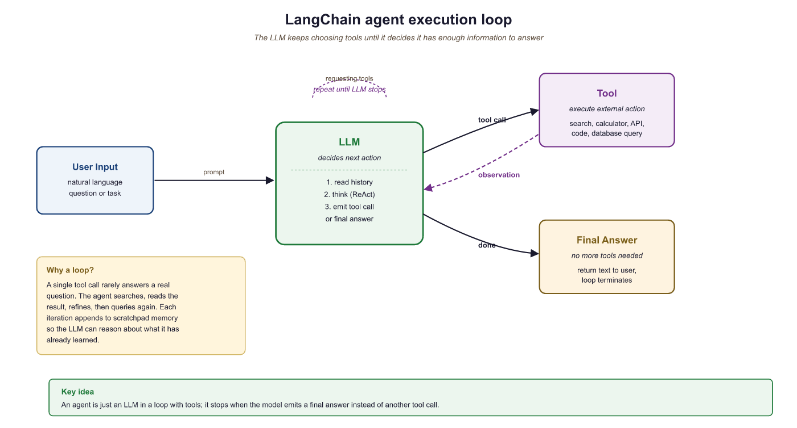
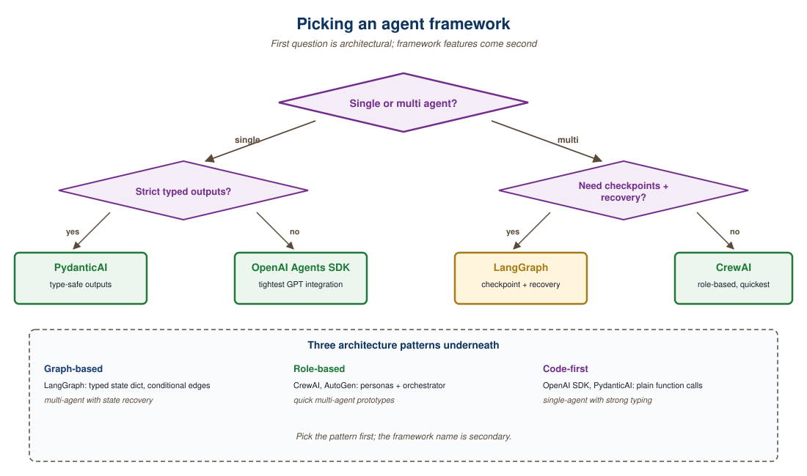

Agent libraries cluster into three styles: graph-based runtimes (LangGraph, AutoGen), role-based coordinators (CrewAI), and minimal "agent is a Python function" libraries (smolagents, PydanticAI). The choice maps to how much structure you want imposed.
30.2.1 Graph-based agent runtimes
- LangGraph v0.2+ (LangChain Inc., 2024-Q3 rewrite) is the explicit state-machine framework for agents, where you define nodes (LLM calls, tools, decisions) and edges (transitions) in a directed graph. The 0.2 rewrite consolidated the state-machine model and added LangGraph Studio, a visual debugger that displays the graph trace as it executes. Its objective is to make multi-step agent workflows debuggable, resumable, and human-pausable by modeling them as state machines with checkpoints, which matters when an agent runs for minutes and you need to intervene partway. The core concept is a typed State object that flows through the graph and persists to a checkpointer (Postgres, SQLite, Redis) at each node. Pick LangGraph when your agent has branches, loops, human-in-the-loop pauses, or long-running tasks; for a 3-step "search, summarize, send", it is overkill.
- AutoGen 0.4+ (Microsoft Research, 2024-Q4 rewrite) is Microsoft's multi-agent conversation framework, where agents talk to each other in a structured dialogue protocol. Its objective is to make agent-to-agent collaboration (Researcher proposing, Critic reviewing, Coder implementing) a first-class abstraction, which matters when the problem decomposes naturally into roles with iterative critique. The core concept is "GroupChat" or "team" abstractions plus an event-driven actor model after the v0.4 rewrite, which fundamentally changed the API from v0.2. If your AutoGen mental model is from 2023, re-read the v0.4 docs before touching code. Pick AutoGen for multi-agent debate or critique loops; for a single-agent workflow, LangGraph is tighter.
- LangChain Agents (LangChain Inc., 2022) is the older AgentExecutor abstraction that predated LangGraph. Its objective was the original "ReAct loop with tool calls" pattern, which mattered as the first widely-adopted agent framework. Today it is mostly legacy: new LangChain agents are built on LangGraph. Pick this only if you are maintaining an older codebase; for new work, start with LangGraph.
30.2.2 Role-based coordinators
- CrewAI (Joao Moura, 2024) is the agents-as-roles framework where you define personas ("Researcher", "Writer", "Reviewer") with goals and tools, and the framework orchestrates them. Its objective is to make multi-agent systems readable as workflows people understand (a job to be done with assigned roles), which matters for demo-driven prototyping and for non-engineer stakeholders. The core concept is the Crew (a team) + Tasks (assignments) + Process (sequential or hierarchical) abstraction; it hides the underlying graph entirely. Pick CrewAI when developer ergonomics and quick role-based demos matter; avoid when you need fine control over state transitions, which LangGraph gives you. Honest production caveat: CrewAI's 2024-25 reception in production teams has been mixed because the hidden control flow makes debugging non-trivial agent failures painful. The framework is great for demos and rapid prototyping; once your agent reaches "five-tool, five-step, non-deterministic", LangGraph's explicit-state model usually wins.
- CrewAI on GitHub: the source-of-truth open-source repository. Useful for inspecting implementation details, filing bugs, and seeing the version-pinned dependencies (CrewAI ships fast, and the docs can lag the latest release).
- swarms and motleycrew: alternative multi-agent libraries beyond CrewAI / AutoGen. Worth knowing exists; for most teams, picking among LangGraph / AutoGen / CrewAI is sufficient.
30.2.3 Minimal "agent as function" libraries
- smolagents (HuggingFace, 2024) is the minimalist agent library built around the CodeAct pattern: the agent writes Python code blocks as its actions, executed in a sandbox, then sees the output. Its objective is to demonstrate that a few-hundred-line library is enough for most agent use cases, which matters when LangChain or AutoGen feels too heavy for what you actually need. The core concept is "actions are Python code, not JSON tool calls" (the CodeAct pattern from Wang et al., 2024), letting the agent compose tools algorithmically. Pick smolagents when you want a tiny, hackable agent that writes code; for tool-heavy non-code workflows, function-calling frameworks are more direct.
- PydanticAI and pydantic-graph (Pydantic team, 2024-25) is the type-safe agent framework from the Pydantic maintainers, where every tool and result is a typed Pydantic model; pydantic-graph (2025) is the agent-graph extension that turns PydanticAI into a graph runtime competitor to LangGraph. The core concept is end-to-end typing: typed tool signatures, typed result models, typed deps injection; the LLM's tool calls and outputs are validated against the schema. Pick PydanticAI for production agents whose outputs flow into typed code; for prototype exploration where types are friction, LangGraph and smolagents are looser.
- Anthropic claude-agent-sdk (Anthropic, 2025): the official SDK for building Claude-based agents; subsumes much of what older agent frameworks tried to do with first-party tool, hook, and skill primitives. The right pick when you are committed to Claude and want Anthropic-supported abstractions.
- mastra (TypeScript): TS-native agent framework gaining mindshare in 2025; the right pick when your codebase is TypeScript-first.
- letta (formerly MemGPT): agent-memory framework with first-class long-term and hierarchical memory; relevant when "agent forgets" is your bottleneck.
- MCP Python and TS SDKs: the canonical libraries every MCP-aware tool now uses. If you are exposing a tool to any MCP client, this is the SDK.
- OpenAI Agents SDK (OpenAI, 2025) is OpenAI's official agent runtime, replacing the old Assistants API. Its objective is to provide first-party agent primitives (handoffs, guardrails, sessions, MCP support) for developers building on the OpenAI Responses API, which matters when you want OpenAI-supported abstractions rather than a third-party framework. Pick when your stack is OpenAI-only; for portability, LangGraph or PydanticAI are looser couplings.
- Anthropic's Computer Use SDK (Anthropic, 2024) is the agent-as-screen-controller toolkit for Claude, where the model sees a screenshot and emits mouse and keyboard actions. Its objective is to let Claude operate any UI a human could operate, even ones without APIs, which matters when automating legacy software or web apps with no programmatic access. The core concept is the "computer", "text-editor", and "bash" tool primitives that ship with Claude 3.5 Sonnet and later. Pick Computer Use when the target system has no API and a human-emulating agent is the only path; for API-accessible work, conventional tool-calling is more reliable.
30.2.4 Comparing the libraries
| Library | Style | Best for | Tradeoff |
|---|---|---|---|
| LangGraph | Graph state machine | Complex workflows | Steeper learning curve |
| AutoGen | Multi-agent chat | Agent-to-agent dialog | Less fine control over state |
| CrewAI | Role-based | Quick multi-role demos | Hides control flow |
| smolagents | CodeAct minimal | Code-writing agents | Smaller ecosystem |
| PydanticAI | Typed tools | Structured-output agents | Newer, fewer examples |
For a single-agent system with fewer than 10 tools, you do not need a framework. A while-loop, a function-calling-capable LLM, and a few hand-written tool definitions are sufficient. Frameworks pay off when you need persistence, human-in-the-loop checkpoints, multi-agent coordination, or production observability. Anthropic's "Building Effective Agents" essay makes this case in detail.
LangChain Agents (Legacy) and Callbacks
Agents are LLM-powered programs that can use tools to accomplish tasks. Instead of following a fixed chain of steps, an agent observes the current state, decides which tool to call (if any), interprets the result, and repeats until the task is complete. LangChain provides the primitives to define tools, wire them to a model, and run the agent loop. For production-grade agent workflows with branching, cycles, and human-in-the-loop controls, see the LangGraph documentation.
1. Defining Tools
A tool is a function that the LLM can choose to call. Each tool has a name, a description (which the model reads to decide when to use it), and a function that executes the action. LangChain provides the @tool decorator for creating tools from ordinary Python functions.
This example defines two custom tools: one that performs a calculation and one that looks up the current weather.
from langchain_core.tools import tool
from typing import Annotated
@tool
def calculate(expression: Annotated[str, "A mathematical expression to evaluate"]) -> str:
"""Evaluate a mathematical expression and return the result.
Use this for any arithmetic or math questions."""
try:
result = eval(expression) # In production, use a safe math parser
return str(result)
except Exception as e:
return f"Error: {e}"
@tool
def get_weather(
city: Annotated[str, "The city name"],
unit: Annotated[str, "Temperature unit: celsius or fahrenheit"] = "celsius"
) -> str:
"""Get the current weather for a city.
Use this when the user asks about weather conditions."""
# In production, this would call a real weather API
return f"The weather in {city} is 22 degrees {unit} and sunny."
# Inspect the tool's schema (this is what the model sees)
print(calculate.name) # "calculate"
print(calculate.description) # "Evaluate a mathematical expression..."
print(calculate.args_schema.schema()) # JSON schema for argumentsWrite clear, specific tool descriptions. The model uses these descriptions to decide which tool to call, so vague descriptions lead to incorrect tool selection. Include examples of when to use (and when not to use) each tool. The docstring becomes the tool's description; type annotations with Annotated become the parameter descriptions.
2. Built-in Tools
LangChain provides pre-built tool integrations for common operations. These save you from writing boilerplate for popular APIs and services.
from langchain_community.tools import DuckDuckGoSearchRun
from langchain_community.tools import WikipediaQueryRun
from langchain_community.utilities import WikipediaAPIWrapper
# Web search via DuckDuckGo (no API key required)
search_tool = DuckDuckGoSearchRun()
result = search_tool.invoke("LangChain framework latest version 2025")
print(result[:200])
# Wikipedia lookup
wiki_tool = WikipediaQueryRun(api_wrapper=WikipediaAPIWrapper(top_k_results=1))
result = wiki_tool.invoke("Transformer neural network architecture")
print(result[:200])3. Creating an Agent with create_tool_calling_agent
The create_tool_calling_agent function creates an agent that uses the model's native tool-calling capability (available in GPT-4o, Claude, Gemini, and others). The model decides which tools to call based on the user's input, and LangChain handles the execution loop via AgentExecutor.
This example creates an agent with access to the calculator and weather tools, then runs it on a multi-step question.
from langchain_openai import ChatOpenAI
from langchain.agents import create_tool_calling_agent, AgentExecutor
from langchain_core.prompts import ChatPromptTemplate, MessagesPlaceholder
# Define the prompt with a placeholder for agent scratchpad
prompt = ChatPromptTemplate.from_messages([
("system", "You are a helpful assistant with access to tools. "
"Use them when needed to answer questions accurately."),
MessagesPlaceholder(variable_name="chat_history", optional=True),
("human", "{input}"),
MessagesPlaceholder(variable_name="agent_scratchpad")
])
# Initialize model and tools
model = ChatOpenAI(model="gpt-4o", temperature=0)
tools = [calculate, get_weather]
# Create the agent
agent = create_tool_calling_agent(model, tools, prompt)
# Wrap in AgentExecutor to handle the tool-call loop
executor = AgentExecutor(
agent=agent,
tools=tools,
verbose=True, # Print each step for debugging
max_iterations=5 # Safety limit on tool-call loops
)
# Run the agent
result = executor.invoke({
"input": "What is the weather in Paris? Also, what is 15% of 847?"
})
print(result["output"])
4. Callbacks and Tracing
Callbacks let you hook into every step of chain and agent execution: model calls, tool invocations, retriever queries, parsing, and errors. LangChain fires callback events at well-defined points in the execution lifecycle, and you can attach handlers to log, monitor, or modify behavior.
This example creates a custom callback handler that logs each step of agent execution.
from langchain_core.callbacks import BaseCallbackHandler
from typing import Any, Dict
class LoggingHandler(BaseCallbackHandler):
"""Logs every LLM call and tool invocation."""
def on_llm_start(self, serialized: Dict[str, Any], prompts: list, **kwargs):
print(f"[LLM START] Model: {serialized.get('id', ['unknown'])}")
def on_llm_end(self, response, **kwargs):
print(f"[LLM END] Tokens used: {response.llm_output}")
def on_tool_start(self, serialized: Dict[str, Any], input_str: str, **kwargs):
print(f"[TOOL START] {serialized.get('name', 'unknown')}: {input_str}")
def on_tool_end(self, output: str, **kwargs):
print(f"[TOOL END] Result: {output[:100]}")
def on_agent_action(self, action, **kwargs):
print(f"[AGENT ACTION] {action.tool}: {action.tool_input}")
def on_agent_finish(self, finish, **kwargs):
print(f"[AGENT FINISH] {finish.return_values}")
# Attach the handler to the executor
result = executor.invoke(
{"input": "What is 2^10?"},
config={"callbacks": [LoggingHandler()]}
)5. LangSmith Tracing
For production observability, LangChain integrates with LangSmith, a hosted tracing and evaluation platform. When enabled, every chain and agent execution is automatically traced with full input/output logging, latency breakdowns, token counts, and error tracking. No code changes are required beyond setting environment variables.
import os
# Enable LangSmith tracing (set these before importing LangChain)
os.environ["LANGCHAIN_TRACING_V2"] = "true"
os.environ["LANGCHAIN_API_KEY"] = "ls__..." # Your LangSmith API key
os.environ["LANGCHAIN_PROJECT"] = "my-agent-app" # Project name in LangSmith
# All subsequent chain/agent invocations are automatically traced.
# View traces at https://smith.langchain.com
# You can also add custom metadata to traces
result = executor.invoke(
{"input": "Summarize the weather in Tokyo"},
config={
"metadata": {"user_id": "user-456", "request_id": "req-789"},
"tags": ["production", "weather-agent"]
}
)LangSmith tracing is invaluable during development and debugging. Enable it early in your project. The free tier is generous enough for development use. In production, use tags and metadata to filter traces by user, session, or feature, making it easy to investigate specific issues.
6. Custom Agent Loops
The AgentExecutor handles the most common agent pattern, but some applications need custom control flow: conditional tool selection, parallel tool calls, human approval before executing certain tools, or complex error recovery. For these cases, you can build a custom agent loop using LangChain's primitives directly.
This example implements a minimal agent loop that gives you full control over the execution cycle.
from langchain_openai import ChatOpenAI
from langchain_core.messages import HumanMessage, AIMessage, ToolMessage
model = ChatOpenAI(model="gpt-4o", temperature=0)
model_with_tools = model.bind_tools([calculate, get_weather])
def run_agent(user_input: str, max_steps: int = 5) -> str:
"""A custom agent loop with full control over execution."""
messages = [HumanMessage(content=user_input)]
tools_map = {"calculate": calculate, "get_weather": get_weather}
for step in range(max_steps):
# Ask the model
response = model_with_tools.invoke(messages)
messages.append(response)
# If no tool calls, we have the final answer
if not response.tool_calls:
return response.content
# Execute each tool call
for tool_call in response.tool_calls:
tool_name = tool_call["name"]
tool_args = tool_call["args"]
print(f"Step {step + 1}: Calling {tool_name}({tool_args})")
# Optional: add approval logic here
# if tool_name == "dangerous_tool":
# approval = input("Approve? (y/n): ")
# if approval != "y":
# continue
# Execute the tool
tool_fn = tools_map[tool_name]
result = tool_fn.invoke(tool_args)
# Add the tool result as a ToolMessage
messages.append(ToolMessage(
content=str(result),
tool_call_id=tool_call["id"]
))
return "Agent reached maximum steps without a final answer."
# Run the custom agent
answer = run_agent("What is the weather in London and what is 42 * 17?")
print(answer)Use AgentExecutor for straightforward tool-calling agents. Use a custom loop (as above) for simple cases where you need one specific customization such as approval gates. For anything involving branching logic, cycles, persistent state, or multi-agent coordination, use LangGraph, which provides a graph-based execution framework built for complex agent architectures.
7. Best Practices for Production Agents
Deploying agents in production requires careful attention to reliability, cost, and safety. The following guidelines apply to all agent implementations, whether you use AgentExecutor, a custom loop, or LangGraph.
| Concern | Recommendation |
|---|---|
| Runaway loops | Set max_iterations (AgentExecutor) or a step counter (custom loop). A typical limit is 5 to 10 iterations. |
| Cost control | Use callback handlers to track token usage per request. Set hard budget limits and abort if exceeded. |
| Tool safety | Validate tool inputs before execution. Never pass user-controlled strings to eval() or shell commands without sanitization. |
| Error handling | Set handle_parsing_errors=True on AgentExecutor. In custom loops, catch tool exceptions and return error messages to the model. |
| Observability | Enable LangSmith tracing in all environments. Tag traces with user and session IDs for debugging. |
| Timeouts | Set max_execution_time on AgentExecutor or use asyncio.wait_for() in async agents. |
LangChain agents combine an LLM's reasoning with tool execution in a loop. Use the @tool decorator to define tools with clear descriptions, create_tool_calling_agent for standard agent creation, and AgentExecutor to run the loop. Enable LangSmith tracing for observability, and set iteration limits and timeouts for safety. For complex agent architectures, graduate to LangGraph.
Agent Frameworks Deep Dive
Agent frameworks enable LLMs to take actions, use tools, plan multi-step workflows, and collaborate with other agents. The seven frameworks compared here represent three distinct architecture patterns: graph-based (LangGraph), role-based multi-agent (CrewAI, AutoGen), and code-first (OpenAI Agents SDK, Semantic Kernel, smolagents, PydanticAI). Each pattern optimizes for different trade-offs between control, simplicity, and multi-agent coordination.
1. Architecture Patterns
See Chapter 26 (AI Agents) and Chapter 28.2 (Architecture Patterns) for the agent-pattern theory. This appendix shows how each pattern looks in code across the seven frameworks.
1.1 Graph-Based Architecture (LangGraph)
See Chapter 26 for the graph-based agent pattern. The LangGraph implementation is:
The following example illustrates a LangGraph agent with a tool-calling loop and a human-in-the-loop approval step.
from langgraph.graph import StateGraph, END
from langgraph.prebuilt import ToolNode
from langchain_openai import ChatOpenAI
from langchain_core.messages import HumanMessage
from typing import TypedDict, Annotated
import operator
class AgentState(TypedDict):
messages: Annotated[list, operator.add]
llm = ChatOpenAI(model="gpt-4o").bind_tools([search_tool, calculator_tool])
def call_model(state: AgentState):
response = llm.invoke(state["messages"])
return {"messages": [response]}
def should_continue(state: AgentState):
last = state["messages"][-1]
if last.tool_calls:
return "tools"
return END
graph = StateGraph(AgentState)
graph.add_node("agent", call_model)
graph.add_node("tools", ToolNode([search_tool, calculator_tool]))
graph.set_entry_point("agent")
graph.add_conditional_edges("agent", should_continue, {"tools": "tools", END: END})
graph.add_edge("tools", "agent")
app = graph.compile()
result = app.invoke({"messages": [HumanMessage("What is 15% of the GDP of France?")]})1.2 Role-Based Multi-Agent Architecture (CrewAI, AutoGen)
See Chapter 28.2 for the role-based multi-agent pattern. The CrewAI implementation below shows a research team with two specialized agents collaborating on a report.
from crewai import Agent, Task, Crew, LLM
llm = LLM(model="gpt-4o")
researcher = Agent(
role="Senior Research Analyst",
goal="Find comprehensive data on the given topic",
backstory="You are an expert researcher with 20 years of experience.",
tools=[search_tool, web_scraper],
llm=llm,
)
writer = Agent(
role="Technical Writer",
goal="Create a clear, well-structured report from research findings",
backstory="You specialize in making complex topics accessible.",
llm=llm,
)
research_task = Task(
description="Research the current state of LLM inference optimization.",
expected_output="A detailed list of findings with sources.",
agent=researcher,
)
writing_task = Task(
description="Write a 1000-word report based on the research findings.",
expected_output="A polished report in markdown format.",
agent=writer,
)
crew = Crew(agents=[researcher, writer], tasks=[research_task, writing_task], verbose=True)
result = crew.kickoff()1.3 Code-First Architecture (OpenAI Agents SDK, smolagents, PydanticAI)
See Chapter 26 for the code-first agent loop pattern. The OpenAI Agents SDK implementation below shows a minimal agent definition.
from agents import Agent, Runner, function_tool
@function_tool
def search(query: str) -> str:
"""Search the web for information."""
return web_search(query)
@function_tool
def calculate(expression: str) -> float:
"""Evaluate a mathematical expression."""
return eval(expression)
agent = Agent(
name="Research Assistant",
instructions="You help users find information and perform calculations.",
tools=[search, calculate],
model="gpt-4o",
)
result = Runner.run_sync(agent, "What is 15% of the GDP of France?")2. Comprehensive Feature Comparison
The following table compares all seven agent frameworks across key dimensions relevant to production agent development.
| Feature | LangGraph | CrewAI | AutoGen | OpenAI Agents SDK | Semantic Kernel | smolagents | PydanticAI |
|---|---|---|---|---|---|---|---|
| Architecture | Graph/state machine | Role-based crew | Conversation-based | Code-first loop | Plugin/planner | Code-first minimal | Type-safe agents |
| Maintainer | LangChain Inc. | CrewAI Inc. | Microsoft | OpenAI | Microsoft | Hugging Face | Pydantic team |
| Language | Python, JS/TS | Python | Python, .NET | Python | Python, C#, Java | Python | Python |
| Multi-agent support | Via sub-graphs | Native (crews) | Native (groups) | Via handoffs | Via planners | Basic | Manual composition |
| Tool calling | Full (any provider) | Full (decorator) | Full (function map) | Full (decorator) | Full (plugins) | Full (decorator) | Full (Pydantic) |
| Human-in-the-loop | Native (interrupt) | Built-in | Built-in | Manual | Approval hooks | Manual | Manual |
| State persistence | Checkpointers | Memory system | Conversation store | None built-in | Memory stores | None built-in | None built-in |
| Streaming | Full | Event-based | Full | Full | Full | Basic | Full |
| LLM provider lock-in | None (any provider) | None (litellm) | None (configurable) | OpenAI only | None (connectors) | None (any provider) | None (any provider) |
| Observability | LangSmith native | CrewAI+ dashboard | AutoGen Studio | OpenAI dashboard | OpenTelemetry | Basic logging | Logfire native |
| License | MIT | MIT | MIT (CC-BY-4.0 docs) | MIT | MIT | Apache 2.0 | MIT |
| GitHub stars (approx.) | 15k+ | 25k+ | 38k+ | 15k+ | 24k+ | 15k+ | 8k+ |
3. Multi-Agent Patterns
See Chapter 28.2 (Architecture Patterns) for the supervisor / collaborative / hierarchical taxonomy. The framework-specific implementations are referenced in the feature table above (Section 2): LangGraph uses conditional edges and nested sub-graphs; CrewAI exposes hierarchical and sequential processes; AutoGen relies on group chats and nested group chats; the OpenAI Agents SDK uses the handoff mechanism.
Multi-agent systems add complexity that is rarely justified for simple tasks. A single agent with multiple tools often outperforms a multi-agent system on straightforward workflows, with lower latency and easier debugging. Reserve multi-agent patterns for genuinely complex workflows where different steps require different expertise, different LLM configurations, or different trust boundaries. Start with a single agent and add agents only when you hit the limits of the single-agent approach.
4. Production Readiness
Agent frameworks vary widely in their production readiness. The following assessment focuses on features that matter when running agents in production environments with real users.
| Production Feature | LangGraph | CrewAI | AutoGen | OpenAI Agents SDK | Semantic Kernel |
|---|---|---|---|---|---|
| State recovery after failure | Checkpointers (Redis, SQL) | Memory persistence | Conversation replay | Manual | Memory stores |
| Timeout and retry handling | Built-in | Built-in | Configurable | Built-in | Built-in |
| Cost control (token budgets) | Via callbacks | Built-in budgets | Token counting | Via API settings | Via filters |
| Guardrails integration | Custom nodes | Guardrails config | Custom agents | Native guardrails | Filters |
| Deployment platform | LangGraph Cloud | CrewAI Enterprise | AutoGen Studio | OpenAI platform | Azure AI |
| Long-running task support | Native (async nodes) | Background tasks | Async groups | Async runner | Step-based |
5. When to Use Each Framework
The following decision table provides concrete recommendations based on common project requirements and team characteristics.

| If you need... | Best Fit | Runner-Up | Rationale |
|---|---|---|---|
| Maximum control over agent flow | LangGraph | Semantic Kernel | Graph-based architecture makes every state transition explicit |
| Quick multi-agent prototype | CrewAI | AutoGen | Role-based definition is intuitive; minimal boilerplate |
| Enterprise .NET/Java ecosystem | Semantic Kernel | AutoGen (.NET) | Microsoft backing; native C# and Java SDKs; Azure integration |
| OpenAI-only deployment | OpenAI Agents SDK | LangGraph | Tightest integration with OpenAI models and platform |
| Minimal dependencies | smolagents | PydanticAI | Lightest footprint; no heavy framework overhead |
| Type-safe structured outputs | PydanticAI | Semantic Kernel | Built on Pydantic; native structured output validation |
| Research agent with code execution | AutoGen | CrewAI | Built-in code executor; designed for code-writing agents |
| Production multi-agent with state | LangGraph | CrewAI | Checkpointing and state recovery for long-running agents |
| Open-source model flexibility | smolagents | LangGraph | Hugging Face ecosystem; works with any model on the Hub |
The agent framework landscape is evolving faster than any other LLM tooling category. New frameworks appear monthly, and existing frameworks add features rapidly. The architectural patterns (graph, role-based, code-first) are more stable than specific framework features. Choose based on architecture fit first, then evaluate features within your preferred architecture pattern.
6. Integration and Interoperability
Agent frameworks do not exist in isolation. They connect to orchestration layers (the Orchestration Frameworks overview), evaluation tools (Experiment Tracking), and serving infrastructure (vLLM & Inference Servers). Key integration points to evaluate include:
- Tool protocol: LangGraph and CrewAI use different tool-calling interfaces. Ensure your tools can be shared across frameworks if you are evaluating multiple options.
- Observability hooks: LangGraph integrates natively with LangSmith. CrewAI has its own telemetry. Semantic Kernel uses OpenTelemetry. Verify that your chosen observability tool (see Experiment Tracking) can capture traces from your agent framework.
- Model Context Protocol (MCP): MCP is emerging as a standard protocol for connecting agents to external tools and data sources. LangGraph, OpenAI Agents SDK, and smolagents all support MCP clients, enabling agents to connect to any MCP-compliant tool server.
- Deployment model: Some frameworks (LangGraph Cloud, CrewAI Enterprise) offer managed deployment. Others require you to build your own deployment infrastructure. Match the deployment model to your operational capabilities.
Summary
Agent frameworks divide into three architecture patterns: graph-based (LangGraph) for maximum control, role-based (CrewAI, AutoGen) for intuitive multi-agent collaboration, and code-first (OpenAI Agents SDK, smolagents, PydanticAI) for simplicity and transparency. Semantic Kernel bridges the enterprise world with multi-language support and Azure integration. For production systems requiring state persistence, failure recovery, and human-in-the-loop approval, LangGraph and Semantic Kernel offer the most mature feature sets. For rapid prototyping of multi-agent systems, CrewAI provides the fastest path. For minimal-dependency single-agent use cases, smolagents or PydanticAI keep your stack lean.
Multi-Agent Patterns and Topologies
One agent is rarely enough. As soon as a task spans multiple skills (research plus writing, code plus review, planning plus execution), a single LLM context starts to fail: prompts get long, role confusion creeps in, the model loses track of which sub-goal it is pursuing. The standard response is to decompose into multiple agents with focused roles, smaller contexts, and a handoff protocol. The remaining question: which topology?
This section catalogs the four multi-agent topologies in production through 2024-2026 with the named cases that made each famous. The conceptual taxonomy is in Chapter 28; this is the practitioner's reference for which pattern to pick and which failure modes to expect. Chapter 27 (Tool Use) covers the MCP and function-calling primitives the agents use.
Four topologies cover 90% of production multi-agent systems: hierarchical (manager dispatches to workers), peer / debate (agents argue toward consensus), pipeline (sequential handoff), competitive (best-of-N wins). Each maps to a problem class with documented failure modes. The framework choice (LangGraph, CrewAI, AutoGen, MetaGPT) is mostly a question of which topology each makes ergonomic.
1. Hierarchical: Manager Plus Workers
The hierarchical topology has a manager agent that decomposes the request and dispatches sub-tasks to specialist workers. The manager plans, sequences, and aggregates; workers execute one well-defined skill. CrewAI popularized this through role-based abstractions and it dominates production content-generation systems.
CrewAI defines each worker as a Role with description, goal, and backstory; the manager (Crew) sequences tasks. The 2024-2025 deployments at Mintlify and HubSpot use a researcher, writer, editor, and fact-checker chained for blog production. The pattern works because each role's prompt stays under 2k tokens, and the manager only tracks current step, not full history.
from crewai import Agent, Task, Crew, Process
researcher = Agent(role="Researcher", goal="Find authoritative sources",
backstory="A meticulous research librarian.", tools=[web_search, arxiv])
writer = Agent(role="Writer", goal="Draft engaging prose",
backstory="A former magazine staff writer.", tools=[])
editor = Agent(role="Editor", goal="Polish for clarity and voice",
backstory="A senior copy editor.", tools=[])
crew = Crew(
agents=[researcher, writer, editor],
tasks=[Task(description="Research X", agent=researcher),
Task(description="Draft post about X using the research", agent=writer),
Task(description="Edit the draft", agent=editor)],
process=Process.hierarchical, # manager dispatches; alt: Process.sequential
)
result = crew.kickoff()The manager prompt is the highest-leverage piece of the system. A loose manager ("delegate as you see fit") drifts into infinite re-dispatch; a tight manager ("call each worker exactly once, in order") loses most of the value. The 2025 sweet spot: a small set of allowed actions (dispatch, aggregate, terminate) plus a max-iteration cap. CrewAI's max_iter and LangGraph's recursion limit both enforce this.
2. Peer / Debate: Consensus Through Disagreement
The peer topology has agents at the same level with deliberately opposing roles (proposer / critic, optimist / pessimist, two experts) exchanging arguments to converge on an answer. Du et al. (2023) "Improving Factuality and Reasoning in Language Models through Multiagent Debate" showed measurable factuality gains on benchmarks where a single agent confabulates. The 2024-2025 follow-ups extended this to code review (proposer suggests fix, second agent searches for bugs).
AutoGen (Microsoft Research, now v0.4 / Agent-Stack as of 2025) is the framework most explicitly designed around peer conversation. Its GroupChat wires N agents into a shared transcript with a speaker-selection policy (round-robin, LLM-routed, rule-based). Microsoft's 2024 GitHub Copilot Workspace case study used AutoGen for code review: proposer suggests refactor, tester writes tests, reviewer looks for regressions, loop terminates on no further critiques.
The textbook peer-debate failure: the first agent says something false with confidence; the second, finding it plausible, builds on it instead of challenging it. Park et al. 2023 "Generative Agents" documented this in social simulations; 2024 Anthropic work extended the analysis. Production mitigation: bind at least one agent to external ground-truth (search, code execution, database). Pure LLM-on-LLM debate amplifies confident wrongness.
3. Pipeline: Sequential Specialization
The pipeline topology is simplest: A's output is B's input, no branching, no loops. MetaGPT (Hong et al., ICLR 2024) made this famous by modeling a software org as a sequence (PM, architect, project manager, engineer, QA) where each produces a structured artifact (PRD, design doc, task breakdown, code, test report) as input for the next. Artifacts coordinate: B reads what A wrote, not A's reasoning history.
Pipeline fits genuinely linear workflows with clear skill boundaries. MetaGPT v0.8 (2024) generated small open-source projects (Snake game, calculator, blog scaffold) from one-line specs; the 2025 successor OpenHands (formerly OpenDevin) applies the pattern to autonomous software engineering with tighter shell-and-Git integration. Pipelines also dominate doc-processing: ingest extracts entities, normalization canonicalizes, summarization writes briefs, classification routes to reviewers.
4. Competitive: Race to the Best Answer
The competitive topology runs N agents on the same task in parallel and picks the best by learned judge, deterministic test, or majority vote. It is the agent equivalent of ML ensembles. Public 2024-2025 examples come from coding: self-consistency decoding (Wang et al., extended to agent loops in 2024) generates N candidates and votes; AlphaCode 2 (DeepMind 2024) sample-and-filtered thousands of code candidates by passing tests.
Competitive fits verifiable tasks (run the code, check JSON schema, validate math) where N x cost is justified by quality gain. The 2025 best-of-N inference work at Anthropic and OpenAI, with reasoning models drawing from a budget of intermediate thoughts and a learned verifier, internalizes this pattern into a single model.
5. Comparison and Selection
Table f.2.1: Multi-Agent Topologies: Selection Guide.
Topology Best For Failure Mode Canonical Framework Cost Profile Hierarchical Multi-skill tasks with clear roles Manager runaway loops CrewAI, LangGraph 1 LLM call per worker step + 1 per manager decision Peer / Debate Factuality, reasoning, code review Cascading hallucinations AutoGen 2N+ calls per turn (every agent speaks) Pipeline Linear workflows, structured artifacts Early-stage errors propagate MetaGPT, OpenHands 1 call per stage; deterministic Competitive Verifiable tasks with high cost of failure N x the budget for marginal gain AlphaCode-style sample-and-rank N parallel runs + verifier
6. Coordination Overhead: The Hidden Tax
| Topology | Best For | Failure Mode | Canonical Framework | Cost Profile |
|---|---|---|---|---|
| Hierarchical | Multi-skill tasks with clear roles | Manager runaway loops | CrewAI, LangGraph | 1 LLM call per worker step + 1 per manager decision |
| Peer / Debate | Factuality, reasoning, code review | Cascading hallucinations | AutoGen | 2N+ calls per turn (every agent speaks) |
| Pipeline | Linear workflows, structured artifacts | Early-stage errors propagate | MetaGPT, OpenHands | 1 call per stage; deterministic |
| Competitive | Verifiable tasks with high cost of failure | N x the budget for marginal gain | AlphaCode-style sample-and-rank | N parallel runs + verifier |
Every additional agent adds coordination overhead: tokens on role descriptions, on context-carrying transcripts, on planning a human would have done in their head. Chen et al. (NeurIPS 2024) "Are More LLM Calls All You Need?" showed empirically that on simple tasks (single-step Q&A, basic summarization), multi-agent systems are worse than a well-prompted single agent because coordination overhead exceeds specialization benefit.
Heuristic: do not reach for multi-agent until a single-agent baseline fails for an identifiable reason (context overflow, role confusion, repeated tool errors). If the single-agent baseline works, multi-agent is gold-plating.
A pattern repeatedly seen in 2024-2025 CrewAI deployments: a hierarchical crew where the manager keeps re-dispatching because the worker's output is "almost right but not quite." Without explicit termination, the loop runs until token budget exhaustion. Fix: every Task gets a max_iter and every worker returns a structured artifact whose acceptance is judged by a deterministic check (schema, regex, hash), not another LLM call. The framework will not save you; you bound loops yourself.
7. Framework Mapping
Most frameworks support multiple topologies but each has a sweet spot. LangGraph is most general (graph engine; any topology) but code-heavy. CrewAI is most ergonomic for hierarchical and pipeline patterns. AutoGen is most natural for peer debate via GroupChat. MetaGPT is purpose-built for the software-engineering pipeline. For competitive / best-of-N no framework dominates; teams wire it themselves around any of the above. See Section 30.2 (Libraries & Frameworks) for the framework-level comparison.
- Section 30.2 (Libraries & Frameworks) for the framework-by-framework feature comparison (LangGraph, CrewAI, AutoGen, OpenAI Agents SDK, Semantic Kernel, smolagents, PydanticAI).
- Section 48.2 (Libraries & Frameworks) for the production observability and guardrail patterns that bound multi-agent systems.
- Chapter 26 (AI Agents) for the conceptual treatment of agent architectures.
- Chapter 27 (Tool Use Protocols) for the MCP and function-calling primitives multi-agent systems use.
- Chapter 28 (Multi-Agent Systems) for the full conceptual taxonomy.
- Four topologies dominate production multi-agent systems: hierarchical (manager + workers), peer / debate, pipeline, competitive (best-of-N). Pick by task shape, not framework preference.
- CrewAI for content production, AutoGen for code review and debate, MetaGPT / OpenHands for software-engineering pipelines, sample-and-rank for verifiable competitive tasks.
- Coordination overhead is real. Chen et al. (2024) showed multi-agent loses to single-agent on simple tasks; reach for multi-agent only when a single-agent baseline fails.
- Cascading hallucinations are the peer-debate failure mode; runaway loops are the hierarchical failure mode. Bind at least one agent to external ground truth; bound every loop with max_iter and structured-artifact termination checks.
- The manager prompt is the highest-leverage piece of any hierarchical system. Tight, action-bounded managers beat loose "delegate as you see fit" managers in every documented 2024-2025 case.